03 / PURE DATA · PATCHING
plugdata：把补丁放进工作站
plugdata 为 Pure Data 提供新的图形界面，可独立运行，也可作为插件进入 DAW。它把原本的信号连接方式带进已有的音轨环境，并默认附带 ELSE 对象与抽象补丁集合。
适合从一条简单效果链读起：音频怎样进来、经过哪些对象、怎样回到宿主。分享补丁时同时写清外部对象依赖和插件／独立运行方式；一张连接图相同，不代表另一台电脑已有同样的对象、音频设置与宿主环境。
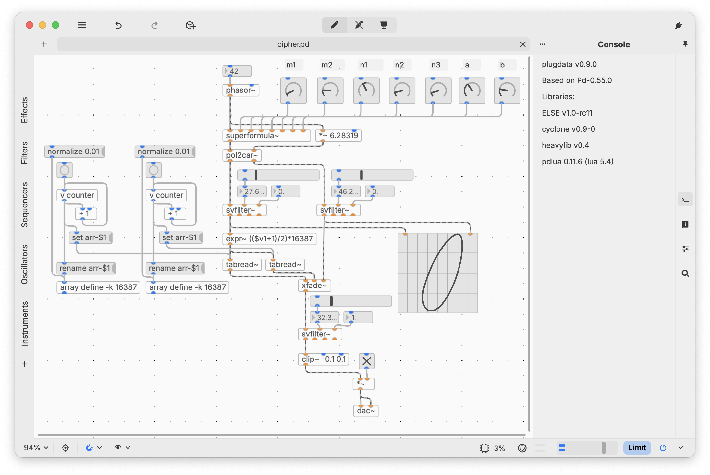
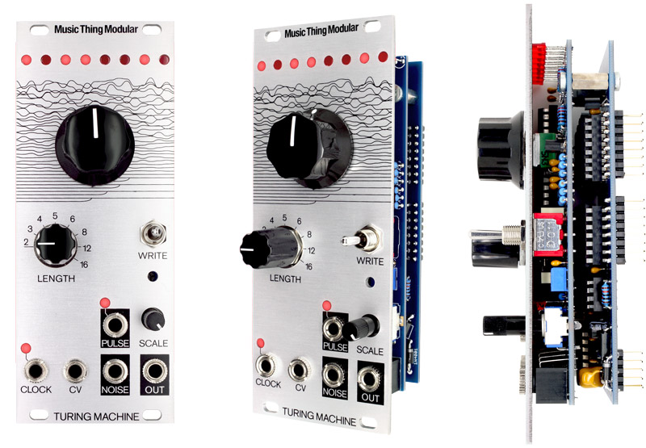
Turing Machine MkII / Tom Whitwell 项目原图，封面灰度显示
AFTER HOURS / 晚刊
2026.11.18 · WED · ISSUE 002
Turing Machine 的移位寄存器与控制电压，
norns 的脚本、采样和录音头。
另有软件工具、模拟合成器制作与影像艺术。
今晚从两件可读源码、可看结构的声音设备出发：一件把比特变成控制电压，一件让脚本组织采样。四条软件发现与两则接口、编辑笔记可以单独阅读；制作与文化短栏分别看一台模拟合成器和一台被磁场改变的电视。
这个名字指向一台随机循环音序器。它产生按时钟前进的控制电压，旋律需要交给下游音源来发声。
Tom Whitwell 的 Music Thing Modular Turing Machine 使用移位寄存器保存比特。2012 年的项目在 2016 年形成 MkII 修订；本期看的是这一版的作者原理图。与逐步输入确定音高的音序器相比，它更适合寻找、保留和缓慢改变一个模式，而不负责替你保存每一段已经离开的序列。
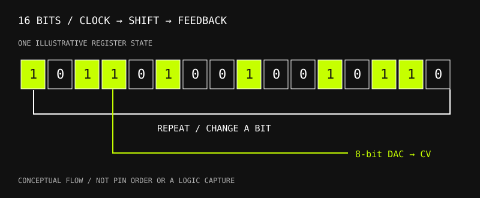
作者图纸的后板可看到 4015 移位寄存器与 4016 开关，网络名 START_OF_LOOP、END_OF_LOOP 把反馈关系直接写在图上。时钟决定何时前进一步，循环路径决定哪些旧位回来；改变反馈中的位，后面的数值轨迹也会跟着改变。这里没有一颗 MCU 在后台运行随机数库。
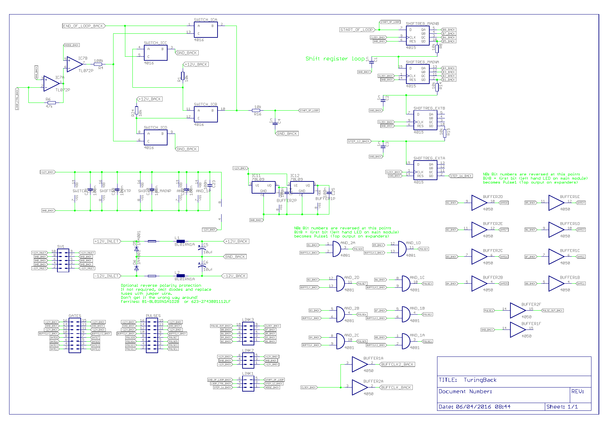
前板则把八个数据位接入 DAC，经 TL074 运放与 SCALE 电位器送到 CV 输出。一个容易混淆的地方是：数字状态变成离散电压，和电压被约束到某个音乐调式，是不同的步骤。8 位 DAC 的分辨率不能读成“八个音阶”；需要固定调性的玩法，还要考虑后续的量化或音源响应。
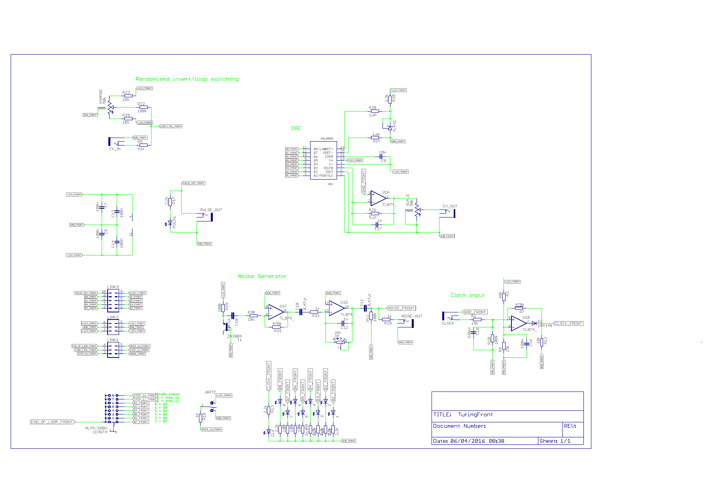
MkII README 特别提到噪声电平微调、噪声电路较低的工作电压，以及面对不同噪声晶体管时的适应性。这比只看面板更有项目经验价值：承担“随机来源”的模拟部分也有器件差异，设计需要留出调节余地。下一步可把噪声源、翻转／循环开关、寄存器和输出级分别圈出来，再看它们靠哪些网络名连接。
作者仓库与版本说明 ↗作者 MkII 原理图 ↗硬件图纸阅读；本刊未搭建、测量或试听该模块。
固定的控制面板，与可以改写的演奏结构并不冲突。norns 让 Lua 脚本定义按键、旋钮、屏幕和声音控制之间的关系。
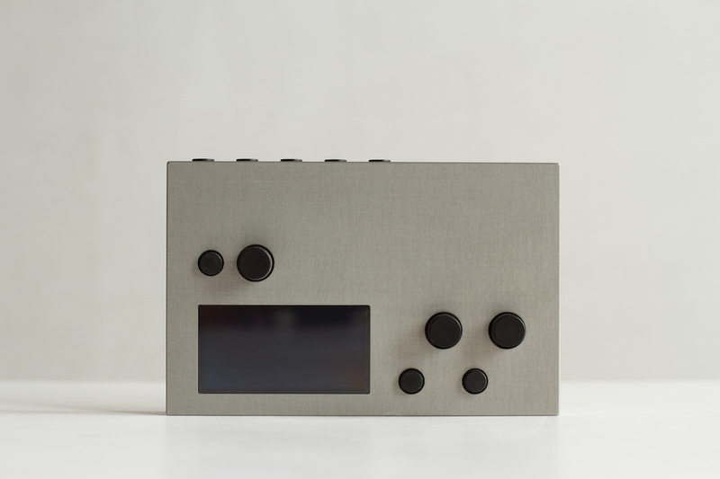
官方文档把它介绍为可运行脚本与 DSP 的声音电脑。Lua 负责可演奏的结构，SuperCollider 引擎负责相应声音处理；内置 softcut 则处理多声部采样播放与录音。初读项目，可以先分清三件事：控制怎么进来、脚本更新了什么、音频在哪个系统里被处理。
softcut 的学习文档区分 voice 与 buffer：前者是单声道播放／录音头，后者存放声音。系统有六个 voice、两个单声道 buffer；不同 voice 可以读取同一份素材，各自拥有位置、速率和电平。先理解这层关系，就不会把“多一条声音”误当成“必须复制一整份文件”。
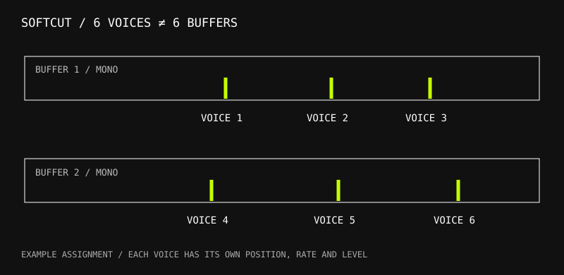
官方 1-basics.lua 例子还有一个适合慢读的细节：它把文件从头装入 buffer 的第 1 秒，再把循环范围设成第 1 到第 2 秒。这里的坐标是缓冲区内的秒数，不是“文件第几段”的编号。源位置与目标位置分开，后面剪切、覆盖录音时就更容易判断自己改动了哪里。
-- 官方示例中的三个调用；并非完整脚本 softcut.buffer_read_mono(file, 0, 1, -1, 1, 1) softcut.loop_start(1, 1) softcut.loop_end(1, 2)
读例子时把“文件路径、载入目标、voice 指派、循环范围、播放开关”列成一张小表。官方学习文档还要求素材用 48 kHz，以获得准确的播放与循环；导入前先查素材参数，比等到音高或时长不对才猜原因更直接。上面省略了初始化与播放设置，完整版本以作者示例为准。
平台文档 ↗softcut 学习文档 ↗官方完整例子 ↗项目源码 ↗文档与源码阅读；未声称在本刊设备上运行。
03 / PURE DATA · PATCHING
plugdata 为 Pure Data 提供新的图形界面，可独立运行，也可作为插件进入 DAW。它把原本的信号连接方式带进已有的音轨环境，并默认附带 ELSE 对象与抽象补丁集合。
适合从一条简单效果链读起：音频怎样进来、经过哪些对象、怎样回到宿主。分享补丁时同时写清外部对象依赖和插件／独立运行方式；一张连接图相同，不代表另一台电脑已有同样的对象、音频设置与宿主环境。

04 / VIRTUAL MODULAR
VCV Rack 在电脑里组织虚拟 Eurorack 模块。官方入门把 Audio 模块作为声卡的进出通道，把 MIDI to CV 作为音符到虚拟控制电压的入口。阅读一个 patch，可以先把音频、音高 CV、门信号分成不同路径，再看它们在何处相遇。
插件开发手册还有一个具体提醒：Rack 中每根线会引入一个采样的延迟，路径长度不同，原本同时产生的时钟与复位未必同时到达。这是该数字环境的处理规则，不能直接套成所有实体模块的性质。
05 / LIVE CODING · HUNDRED RABBITS
Orca 把字母当作操作符，在字符网格中组织程序音序。大写操作符通常每帧运行，小写在收到 bang 时运行；钟、延迟、随机与读写关系直接出现在网格里。
它发送 MIDI、OSC 或 UDP 事件，声音由连接的音源产生。第一次读例子，先追一条时钟到音符输出的路径，再改速度或值域，容易看清变化从哪来。浏览器版与桌面版能力有别：README 明确说明浏览器版不提供 OSC／UDP，不能把网页演示当成所有接口都可用。
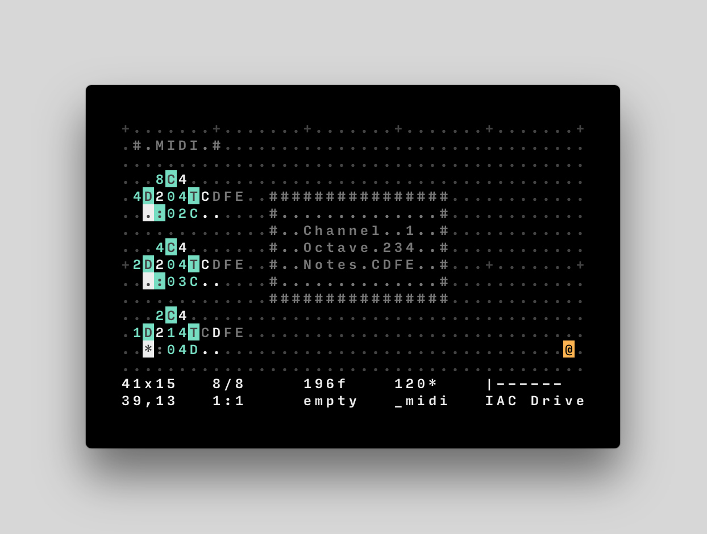
06 / TRACKER · SAMPLE MUSIC
OpenMPT 是 Windows／Wine 环境的 tracker。Pattern 中的音符、乐器、音量与效果命令，可以与 Samples 页的波形、循环点和默认电平对照着读。一个持续音可能依靠样本循环，并不一定来自连续运行的合成器。
值得留意 MPTM 的外部采样功能：工程可以引用磁盘上的素材，循环点等参数仍在 module 内。省下重复文件以后，改同一份素材会影响引用它的工程。分享作品时，别只确认 pattern 能打开，还要确认对方拿到了它引用的样本。
norns 文档把输入、输出标为非平衡线路电平，并明确提醒不要直接接入模块合成器电平。这是连接声音设备时值得先查的边界：插头尺寸只说明机械接口，不能替代对信号幅度、极性、直流分量与输入范围的判断。
| 类型 | 先查什么 | 常见误读 |
|---|---|---|
| 音频 | 输入范围、输出幅度与增益 | 接口相同就能直连 |
| 音高 CV | V/oct 等映射、允许范围 | 电压变化量等于线性频差 |
| Gate / Trigger | 触发阈值、脉宽与极性 | 看见方波就能互换 |
VCV Rack 的文档常以约 ±5 V 的音频、0–10 V 或双极性 CV 作虚拟模块约定，也同时强调 Eurorack 并没有涵盖一切设备的统一规则。做真实接线，应回到每台设备的说明与匹配电路；不要从软件里的数值推定电脑声卡可以原样输出这些电压。
norns 连接与电平说明 ↗VCV 数字环境约定 ↗表格是阅读接口说明的提纲，未替代具体设备规格。
把结尾接回开头，会建立一处新的相邻关系。如果边界从较高的幅值突然跳到较低的幅值，这个不连续本身就会带来额外的高频成分；一段素材单次播放没有问题，不代表它循环以后也没有接缝。
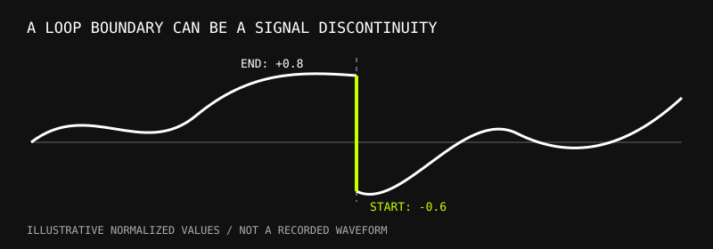
OpenMPT 提供在循环起止之间处理的 Sample Crossfader；softcut 也有以秒为单位的 fade_time。它们提示了两类可继续研究的手段：编辑素材的边界，或让读头切换有一段过渡。交叉淡化会改变重叠部分的内容与电平，不能当作不影响声音的万能修复。
先保留源素材，标记起止位置，再比较边界幅值、相位和淡化范围。两个端点都接近零，只回答了幅值的一部分问题；循环内的节奏位置与尾音是否合适，还需在自己的素材上判断。
OpenMPT 样本编辑 ↗softcut 参数定义 ↗知识与工具阅读，不声称已完成听感对比。
Oskitone 的 POLY555 把二十组 555 定时器振荡电路放进一台可复音演奏的方波合成器。制作指南将它们排成四行五列，每个按键对应一组；9 V 电池经 7805 稳压到 5 V，音频汇入功放。项目同时公开 KiCad 板图、OpenSCAD 外壳代码与装配指南。
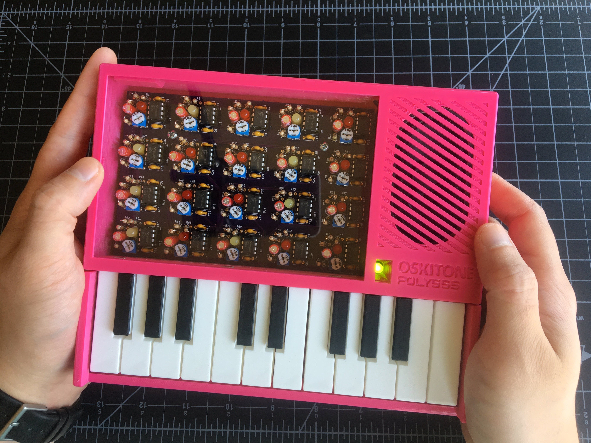
作者的调音表把 S1／RV1 到 S20／RV20 一一对应，从 F3 到 C5。读这里可以把“复音”具体化：不同按键有自己的振荡器和微调点，调准一组不代表其余十九组已调准。它把重复焊接、元件差异、装配顺序和校准工作都留在可读的制作记录里。
继续看原项目时，可以先对照一个按键支路的阻容、微调与混音去向，再观察 PCB 怎样复制它。外壳窗口也有实际作用：重复结构不必藏起来，使用者能看到这台乐器为什么有这样的声音与调节方式。
原项目与设计文件 ↗作者电路说明 ↗逐键调音表 ↗制作记录选读，本刊未焊接或校准。
《Magnet TV》把磁铁与黑白电视放在一起，让电子图像的形成机制进入作品。屏幕不再只是播送现成节目的末端：磁场改变了显示出来的形状，电视本身成为可以被重新安排的媒介。
它值得与今天的图像软件分开看。这里的变化发生在显示装置与物理场之间，不是把一段视频套上滤镜。看馆藏图时，可以同时注意屏幕上的形状、机壳上的磁铁和两者的空间关系；作品的材料与工作方式就在同一个场景里。
作品资料与图像入口：Whitney Museum of American Art。上方为文字编辑卡，作品原图见馆藏页。
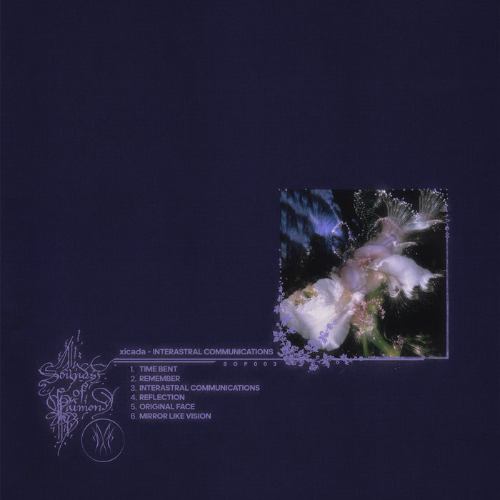
xicada / Sounds Of Paimon
预售 · 预计发行 2026.11.20
11.18 核查：6 曲中 2 曲开放预览
多伦多制作人 Ilyse Krivel 将旧日记改写为同名曲歌词，另邀 Eyin Sof 与 Y.F. Tamashi 参与。发行页以复杂节拍、drone 与人声描述这次创作，母带与封面由 Jesse Osborne-Lanthier 完成。
封面设计：Jesse Osborne-Lanthier；来源：发行页。